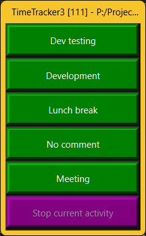

The Slim skin is the TimeTracker3's preferred skin for everyday work, where administrative tasks (such as being assigned to work on a new Task or completing a Task) are rare as compared to switching between everyday tasks and activities most frequently used. Its primary goal is to minimize the screen estate required for TimeTracker3 to operate; however, it still provides full administrative capabilities on those rare occasions when such are needed.

The Slim skin's UI consists solely of the current user's Quick Picks list, with each frequently used Activity or Task represented by a single button. Clicking (or tapping) on one of these buttons starts recording the corresponding Task Or Activity, repeated clicking (or tapping) on the same button stops the recording and records the corresponding Work item.
As special cases:
The Slim skin uses the same keyboard shortcuts as all other Skins (such as Administrator skin). For example, pressing "1" brings up the Users view, pressing Ctrl+P brings up the Preferences dialog, etc. These shortcuts are also listed alongside the commands they invoke in the Slim skin's context menu (see below).
Note that Slim skin will open various views in modal dialogs, which need to be closed before the normal work can resume.
Right-clicking anywhere within the Slim skin's window pops up a context menu, which contains the full complement of work-related and administrative actions provided by TimeTracker3. The availability of each action is, of course, subjects to the Capabilities granted by the currently logged in user and whether or not the currently open workspace is read-only or not.
As a special feature, the Slim skin's window can be minimized to the system tray if the underlying OS supports the system tray. This is achieved via the context menu (described in the previous section).
When the TimeTracker3 has been minimized to the system tray:
IMPORTANT: The Slim skin is essentially a colorful representation of the Quick Picks list for the current user. If the Quick Picks list is modified (by invoking the corresponding context menu command, or by using the "P" keyboard shortcut), the available Task/Activity buttons are rearranged to reflect the changes made to the Quick Picks list, but the Slim skin window itself is not e.g. resized. Therefore, after adding items to the Quick Picks list (or removing items from it) the manual resize of the Slim skin window may be in order so as to keep all items visible and not too large.
See also: -